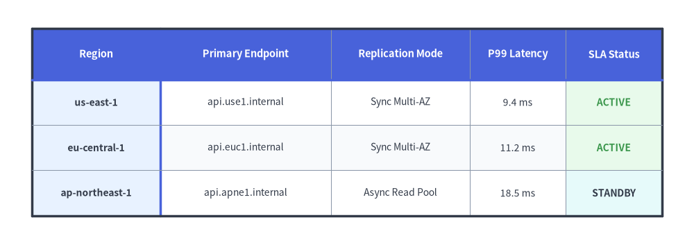
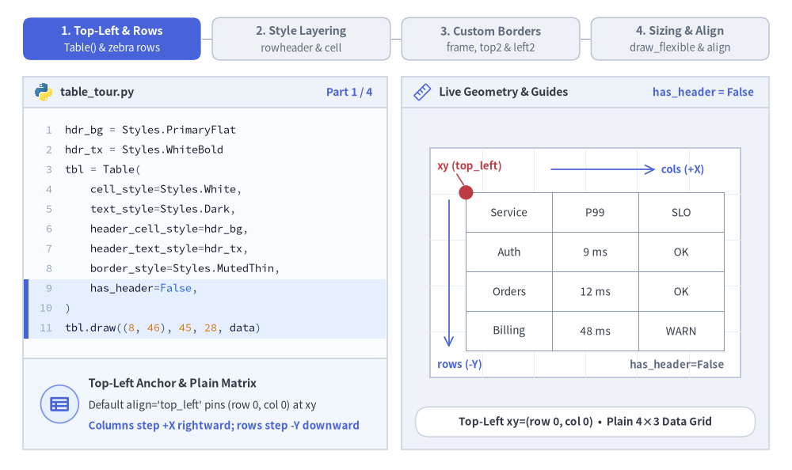
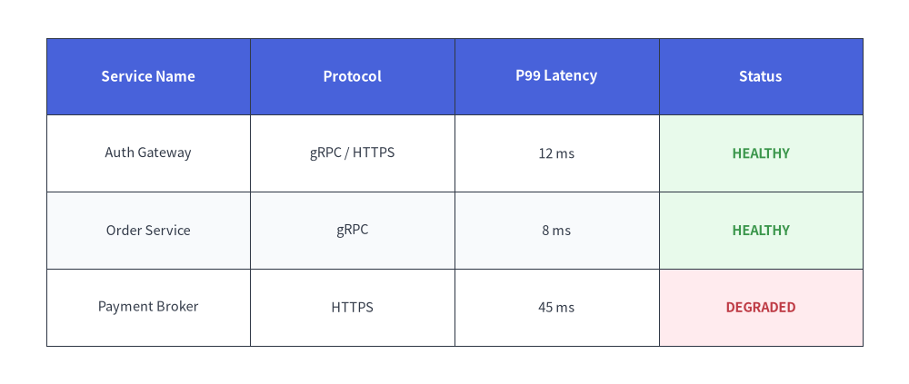
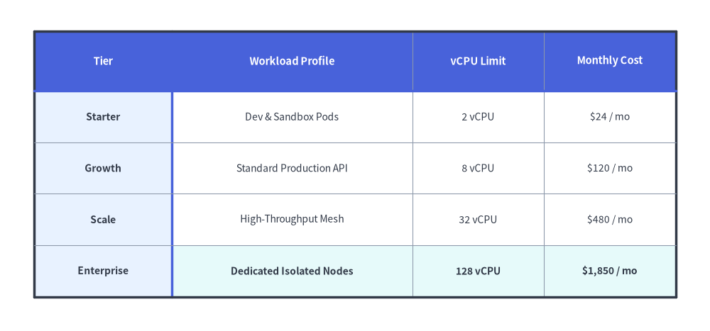

Table Component
The Table component renders 2D tabular data, comparison matrices, and database schemas.
It provides fine-grained styling control over borders, headers, alternating even/odd row backgrounds, and specific cell highlights.

Source Code
from drawlib.canvas import save, setup
from drawlib.smartarts import Table
from drawlib.styles import Colors, Styles
setup(width=130, height=46)
t = Table(
cell_style=Styles.White,
text_style=Styles.Dark.patch(text_size=10.0),
header_cell_style=Styles.PrimaryFlat,
header_text_style=Styles.WhiteBold.patch(text_size=10.5),
border_style=Styles.MutedThin,
has_header=True,
)
t.set_style_cell_evenodd(
even_color=Colors.Muted1,
even_text_style=Styles.Dark.patch(text_size=10.0),
odd_color=Colors.White,
odd_text_style=Styles.Dark.patch(text_size=10.0),
)
t.set_style_cell_rowheader(
background_color=Colors.Primary1,
text_style=Styles.DarkBold.patch(text_size=10.0, halign="left"),
)
t.set_style_cell_header(
background_color=Colors.Primary,
text_style=Styles.WhiteBold.patch(text_size=10.5),
)
t.set_style_cell(
background_color=Colors.Success1,
text_style=Styles.SuccessBold.patch(text_size=10.0),
rows=[1, 2],
columns=[4],
)
t.set_style_cell(
background_color=Colors.Secondary1,
text_style=Styles.DarkBold.patch(text_size=10.0),
rows=[3],
columns=[4],
)
t.set_style_border(
top=Styles.DarkBold,
top2=Styles.PrimaryBold,
bottom=Styles.DarkBold,
left=Styles.DarkBold,
left2=Styles.PrimaryBold,
right=Styles.DarkBold,
between_columns=Styles.MutedThin,
between_rows=Styles.MutedThin,
)
data = [
["Region", "Primary Endpoint", "Replication Mode", "P99 Latency", "SLA Status"],
["us-east-1", "api.use1.internal", "Sync Multi-AZ", "9.4 ms", "ACTIVE"],
["eu-central-1", "api.euc1.internal", "Sync Multi-AZ", "11.2 ms", "ACTIVE"],
["ap-northeast-1", "api.apne1.internal", "Async Read Pool", "18.5 ms", "STANDBY"],
]
t.draw_flexible(
xy=(6, 40.5),
column_widths=[24.0, 32.0, 26.0, 18.0, 18.0],
row_heights=[9.5, 8.5, 8.5, 8.5],
data=data,
)
save()
1. Core Concepts & Basic Usage
Table renders 2D list[list[Any]] matrices anchored by default at Top-Left (x, y) (align="top_left", expanding rightward along +X and downward along -Y), while applying cell and header styling rules sequentially in exact call order. You can customize outer perimeter frames alongside header/row-header divider lines (top2, left2), and switch between uniform grid sizing (draw) and explicit per-column/per-row dimensions (draw_flexible):

Source Code
from __future__ import annotations
from drawlib.anim import Animation
from drawlib.canvas import save, setup
from drawlib.icons import code as code_icons
from drawlib.icons import phosphor
from drawlib.lines import line
from drawlib.shapes import circle, rectangle
from drawlib.smartarts import SourceCode, SourceCodeStyles, Table
from drawlib.styles import Colors, Styles
from drawlib.text import text
W, H = 138.0, 82.0
setup(width=W, height=H)
anim = Animation(fps=10.0, loop=0)
CODE_TEXT_SIZE = 10.0
PT_TO_CANVAS = W / 720.0
FONT_CANVAS = CODE_TEXT_SIZE * PT_TO_CANVAS
LINE_H = FONT_CANVAS * 1.8
PAD_Y = FONT_CANVAS * 1.2
CODE_STYLES = SourceCodeStyles.get("default", font_lang="en", text_size=CODE_TEXT_SIZE).patch(
box_style=Styles.Neutral.patch(shape_fill_color=(0, 0, 0, 0), shape_line_width=0),
)
PANE_HEADER = Styles.Neutral.patch(
shape_fill_color=(238, 243, 250),
shape_line_color=(203, 213, 225),
shape_line_width=1.2,
shape_r=0.0,
)
EDITOR_BODY = Styles.Neutral.patch(
shape_fill_color=(250, 252, 255),
shape_line_color=(203, 213, 225),
shape_line_width=1.2,
shape_r=0.0,
)
TAKEAWAY_BODY = Styles.Neutral.patch(
shape_fill_color=(242, 246, 253),
shape_line_color=(203, 213, 225),
shape_line_width=1.2,
shape_r=0.0,
)
STUDIO_BODY = Styles.Neutral.patch(
shape_fill_color=(239, 243, 249),
shape_line_color=(203, 213, 225),
shape_line_width=1.2,
shape_r=0.0,
)
PART_ITEMS = [
("1. Top-Left & Rows", "Table() & zebra rows"),
("2. Style Layering", "rowheader & cell"),
("3. Custom Borders", "frame, top2 & left2"),
("4. Sizing & Align", "draw_flexible & align"),
]
DATA = [
["Service", "P99", "SLO"],
["Auth", "9 ms", "OK"],
["Orders", "12 ms", "OK"],
["Billing", "48 ms", "WARN"],
]
def draw_step_bar(active_part: int) -> None:
"""Draw top 4-part progress bar (active_part is 1..4)."""
pill_w = 31.0
pill_h = 7.4
gap = 2.0
start_x = 4.0 + pill_w / 2.0
cy = 75.2
for idx, (label, sublabel) in enumerate(PART_ITEMS, start=1):
cx = start_x + (idx - 1) * (pill_w + gap)
if idx > 1:
prev_cx = cx - (pill_w + gap)
line(
(prev_cx + pill_w / 2.0 + 0.2, cy),
(cx - pill_w / 2.0 - 0.2, cy),
style=Styles.PrimaryBold if idx <= active_part else Styles.MutedThin,
)
if idx == active_part:
st = Styles.PrimaryFlat.patch(shape_r=1.4)
tst = Styles.WhiteBold.patch(text_size=10.3)
sub_tst = Styles.White.patch(text_size=9.5)
elif idx < active_part:
st = Styles.PrimaryNeutral.patch(shape_r=1.4, shape_line_width=1.1)
tst = Styles.PrimaryBold.patch(text_size=10.3)
sub_tst = Styles.Primary.patch(text_size=9.5)
else:
st = Styles.Neutral.patch(shape_r=1.4, shape_line_width=1.1)
tst = Styles.MutedBold.patch(text_size=10.3)
sub_tst = Styles.Muted.patch(text_size=9.5)
rectangle((cx, cy), width=pill_w, height=pill_h, style=st)
text((cx, cy + 1.35), label, style=tst)
text((cx, cy - 1.55), sublabel, style=sub_tst)
def draw_left_pane(
active_part: int,
code_lines: list[str],
hl_range: tuple[int, int],
icon_fn: object,
summary_title: str,
summary_line1: str,
summary_line2: str,
) -> None:
"""Draw left Python code editor + bottom concept takeaway card."""
x0, w = 4.0, 63.5
cx = x0 + w / 2.0
top_y = 63.2
header_h = 5.4
editor_h = 43.8
takeaway_h = 15.8
rectangle((cx, top_y + header_h / 2.0), width=w, height=header_h, style=PANE_HEADER)
code_icons.python((x0 + 3.6, top_y + header_h / 2.0), width=3.4, style=Styles.Neutral)
text(
(x0 + 6.5, top_y + header_h / 2.0),
"table_tour.py",
style=Styles.DarkBold.patch(text_size=10.2, halign="left"),
)
text(
(x0 + w - 2.6, top_y + header_h / 2.0),
f"Part {active_part} / 4",
style=Styles.PrimaryBold.patch(text_size=9.8, halign="right"),
)
rectangle((cx, top_y - editor_h / 2.0), width=w, height=editor_h, style=EDITOR_BODY)
hl_start, hl_end = hl_range
hl_top = top_y - PAD_Y - hl_start * LINE_H
hl_bot = top_y - PAD_Y - (hl_end + 1) * LINE_H
hl_cy = (hl_top + hl_bot) / 2.0
hl_h = hl_top - hl_bot
rectangle(
(cx, hl_cy),
width=w - 0.6,
height=hl_h,
style=Styles.Neutral.patch(shape_fill_color=(229, 239, 255), shape_line_width=0),
)
rectangle(
(x0 + 0.55, hl_cy),
width=0.9,
height=hl_h,
style=Styles.PrimaryFlat.patch(shape_line_width=0),
)
SourceCode.draw(
xy=(x0, top_y),
width=w,
code="\n".join(code_lines),
styles=CODE_STYLES,
code_lang="python",
show_linenum=True,
align="top_left",
)
take_cy = 3.6 + takeaway_h / 2.0
rectangle((cx, take_cy), width=w, height=takeaway_h, style=TAKEAWAY_BODY)
circle(
(x0 + 6.4, take_cy),
radius=3.3,
style=Styles.PrimaryNeutral.patch(shape_line_width=1.2),
)
icon_fn((x0 + 6.4, take_cy), width=3.8, style=Styles.PrimaryBold) # type: ignore[operator]
text(
(x0 + 11.4, take_cy + 3.6),
summary_title,
style=Styles.DarkBold.patch(text_size=10.4, halign="left"),
)
text(
(x0 + 11.4, take_cy - 0.2),
summary_line1,
style=Styles.Dark.patch(text_size=9.7, halign="left"),
)
text(
(x0 + 11.4, take_cy - 3.8),
summary_line2,
style=Styles.PrimaryBold.patch(text_size=9.6, halign="left"),
)
def draw_geometry_studio(param_badge: str, footer_caption: str) -> tuple[float, float]:
"""Draw right geometry lab shell, inner coordinate sheet with subtle grid, and footer."""
x0, w = 70.0, 64.0
cx = x0 + w / 2.0
top_y = 63.2
header_h = 5.4
body_h = 59.6
rectangle((cx, top_y + header_h / 2.0), width=w, height=header_h, style=PANE_HEADER)
phosphor.ruler((x0 + 3.6, top_y + header_h / 2.0), width=3.4, style=Styles.Primary)
text(
(x0 + 6.5, top_y + header_h / 2.0),
"Live Geometry & Guides",
style=Styles.DarkBold.patch(text_size=10.2, halign="left"),
)
text(
(x0 + w - 2.6, top_y + header_h / 2.0),
param_badge,
style=Styles.PrimaryBold.patch(text_size=9.6, halign="right"),
)
rectangle((cx, 3.6 + body_h / 2.0), width=w, height=body_h, style=STUDIO_BODY)
sheet_cx, sheet_cy = cx, 36.2
sheet_w, sheet_h = 54.0, 40.0
sx0, sy0 = sheet_cx - sheet_w / 2.0, sheet_cy - sheet_h / 2.0
rectangle(
(sheet_cx, sheet_cy),
width=sheet_w,
height=sheet_h,
style=Styles.Neutral.patch(
shape_fill_color=(255, 255, 255),
shape_line_color=(180, 194, 214),
shape_line_width=1.2,
),
)
g_st = Styles.MutedThin.patch(line_color=(232, 238, 246), line_width=0.8)
for gx in range(1, 6):
vx = sx0 + gx * (sheet_w / 6.0)
line((vx, sy0), (vx, sy0 + sheet_h), style=g_st)
for gy in range(1, 5):
vy = sy0 + gy * (sheet_h / 5.0)
line((sx0, vy), (sx0 + sheet_w, vy), style=g_st)
rectangle(
(cx, 8.4),
width=59.2,
height=5.2,
style=Styles.Neutral.patch(
shape_fill_color=(255, 255, 255),
shape_line_color=(203, 213, 225),
shape_line_width=1.1,
shape_r=2.4,
),
text=footer_caption,
text_style=Styles.DarkBold.patch(text_size=9.8),
)
return sheet_cx, sheet_cy
def build_table(
*,
has_header: bool = True,
zebra: bool = False,
rowheader: bool = False,
ok_cells: bool = False,
warn_cell: bool = False,
right_align_p99: bool = False,
outer_bold: bool = False,
dividers: bool = False,
) -> Table:
"""Construct configured Table matching the active tour frame."""
body_tx = Styles.Dark.patch(text_size=9.8)
hdr_tx = Styles.WhiteBold.patch(text_size=10.0)
tbl = Table(
cell_style=Styles.White,
text_style=body_tx,
header_cell_style=Styles.PrimaryFlat,
header_text_style=hdr_tx,
border_style=Styles.MutedThin,
has_header=has_header,
)
if zebra:
tbl.set_style_cell_evenodd(
even_color=Colors.Muted1,
even_text_style=body_tx,
odd_color=Colors.White,
odd_text_style=body_tx,
)
if right_align_p99:
tx_1d = Styles.Dark.patch(text_size=9.8, halign="right", xy_shift=(2.6, 0.0))
tx_2d = Styles.Dark.patch(text_size=9.8, halign="right", xy_shift=(2.1, 0.0))
tbl.set_style_cell(Colors.White, tx_1d, rows=[1], columns=[1])
tbl.set_style_cell(
Colors.Muted1 if zebra else Colors.White,
tx_2d,
rows=[2],
columns=[1],
)
tbl.set_style_cell(Colors.White, tx_2d, rows=[3], columns=[1])
if rowheader:
tbl.set_style_cell_rowheader(
background_color=Colors.Primary1,
text_style=Styles.DarkBold.patch(text_size=9.8),
)
if has_header and (zebra or rowheader):
tbl.set_style_cell_header(
background_color=Colors.Primary,
text_style=hdr_tx,
)
if ok_cells:
tbl.set_style_cell(
background_color=Colors.Success1,
text_style=Styles.SuccessBold.patch(text_size=9.8),
rows=[1, 2],
columns=[2],
)
if warn_cell:
tbl.set_style_cell(
background_color=Colors.Danger1,
text_style=Styles.DangerBold.patch(text_size=9.8),
rows=[3],
columns=[2],
)
if outer_bold or dividers:
tbl.set_style_border(
top=Styles.DarkBold,
bottom=Styles.DarkBold,
left=Styles.DarkBold,
right=Styles.DarkBold,
top2=Styles.PrimaryBold if dividers else None,
left2=Styles.PrimaryBold if dividers else None,
between_columns=Styles.MutedThin,
between_rows=Styles.MutedThin,
)
return tbl
# =========================================================================
# Part 1: Top-Left Anchor, Header Band & Zebra Rows (3 frames)
# =========================================================================
P1_STATES = [
(
False,
False,
3.3,
(8, 10),
[
"hdr_bg = Styles.PrimaryFlat",
"hdr_tx = Styles.WhiteBold",
"tbl = Table(",
" cell_style=Styles.White,",
" text_style=Styles.Dark,",
" header_cell_style=hdr_bg,",
" header_text_style=hdr_tx,",
" border_style=Styles.MutedThin,",
" has_header=False,",
")",
"tbl.draw((8, 46), 45, 28, data)",
],
"has_header = False",
"Top-Left xy=(row 0, col 0) • Plain 4×3 Data Grid",
"Top-Left Anchor & Plain Matrix",
"Default align='top_left' pins (row 0, col 0) at xy",
"Columns step +X rightward; rows step -Y downward",
"has_header=False",
Styles.MutedBold,
),
(
True,
False,
3.3,
(5, 8),
[
"hdr_bg = Styles.PrimaryFlat",
"hdr_tx = Styles.WhiteBold",
"tbl = Table(",
" cell_style=Styles.White,",
" text_style=Styles.Dark,",
" header_cell_style=hdr_bg,",
" header_text_style=hdr_tx,",
" border_style=Styles.MutedThin,",
" has_header=True,",
")",
"tbl.draw((8, 46), 45, 28, data)",
],
"has_header = True",
"Row 0 Header Band: PrimaryFlat + WhiteBold",
"Automatic Header Row (has_header=True)",
"Row 0 auto-applies header_cell_style & header_text_style",
"Reserves PrimaryFlat strictly for the top header band",
"Row 0 -> PrimaryFlat",
Styles.PrimaryBold,
),
(
True,
True,
3.4,
(0, 5),
[
"tbl.set_style_cell_evenodd(",
" even_color=Colors.Muted1,",
" even_text_style=Styles.Dark,",
" odd_color=Colors.White,",
" odd_text_style=Styles.Dark,",
")",
"# Re-apply row 0 after evenodd",
"tbl.set_style_cell_header(",
" Colors.Primary,",
" Styles.WhiteBold,",
")",
],
"set_style_cell_evenodd",
"Alternating Muted1 / White Zebra Rows + Header Band",
"Zebra Rows (set_style_cell_evenodd)",
"Alternates Muted1 (even) and White (odd) across rows",
"Call set_style_cell_header() afterward to keep row 0",
"Muted1 / White Zebra",
Styles.PrimaryBold,
),
]
for has_hdr, is_zebra, dur, hl_rng, c_lines, badge, foot, s_t, s_1, s_2, b_note, b_st in P1_STATES:
with anim.frame(duration=dur):
draw_step_bar(1)
draw_left_pane(1, c_lines, hl_rng, phosphor.table, s_t, s_1, s_2)
draw_geometry_studio(badge, foot)
tx, ty, tw, th = 81.2, 48.4, 45.0, 27.6
tbl = build_table(has_header=has_hdr, zebra=is_zebra)
tbl.draw(xy=(tx, ty), width=tw, height=th, data=DATA)
# Top-Left xy anchor dot + rightward (+X) & downward (-Y) growth guides
circle((tx, ty), radius=1.25, style=Styles.DangerFlat)
line(
(79.6, 51.6),
(80.8, 49.7),
style=Styles.DangerBold.patch(line_width=1.15),
)
text(
(76.2, 53.0),
"xy (top_left)",
style=Styles.DangerBold.patch(text_size=9.6, halign="left"),
)
line(
(96.0, 52.4),
(114.2, 52.4),
arrow_head="->",
style=Styles.PrimaryBold.patch(line_width=1.25),
)
text(
(115.2, 52.4),
"cols (+X)",
style=Styles.PrimaryBold.patch(text_size=9.5, halign="left"),
)
line(
(78.2, ty - 1.4),
(78.2, ty - th + 0.6),
arrow_head="->",
style=Styles.PrimaryBold.patch(line_width=1.25),
)
text(
(76.2, 18.4),
"rows (-Y)",
style=Styles.PrimaryBold.patch(text_size=9.5, halign="left"),
)
text(
(126.2, 18.4),
b_note,
style=b_st.patch(text_size=9.5, halign="right"),
)
# =========================================================================
# Part 2: Sequential Cell Style Layering (3 frames)
# =========================================================================
P2_STATES = [
(
False,
False,
3.3,
(1, 4),
[
"# Layer 2: Col 0 row header",
"tbl.set_style_cell_rowheader(",
" Colors.Primary1,",
" Styles.DarkBold,",
")",
"# Layer 3: Keep row 0 header",
"tbl.set_style_cell_header(",
" Colors.Primary,",
" Styles.WhiteBold,",
")",
],
"set_style_cell_rowheader",
"Layer 2: Col 0 Row Header (Primary1) + Row 0 (Primary)",
"Row Header Layering (Col 0)",
"set_style_cell_rowheader tints column 0 in Primary1",
"Call set_style_cell_header next so (0, 0) stays Primary",
(81.2, 20.8, 15.0, 20.7),
Styles.PrimaryDashed,
[1, 2, 3],
0,
Styles.PrimaryBold,
"Order: evenodd -> rowheader -> header",
),
(
True,
False,
3.3,
(1, 5),
[
"# Layer 4: OK cells -> Success1",
"tbl.set_style_cell(",
" Colors.Success1,",
" Styles.SuccessBold,",
" rows=[1, 2], columns=[2],",
")",
"tbl.draw((8, 46), 45, 28, data)",
],
"rows=[1, 2], cols=[2]",
"Layer 4: Semantic Success1 on Cells [1, 2] & [2, 2]",
"Targeted Cell Range (Success1)",
"set_style_cell intersects 0-indexed rows & columns",
"rows=[1, 2], columns=[2] highlights healthy SLOs",
(111.2, 27.7, 15.0, 13.8),
Styles.SuccessDashed,
[1, 2],
2,
Styles.SuccessBold,
"rows=[1, 2], columns=[2] -> Success1",
),
(
True,
True,
3.5,
(7, 10),
[
"# Layer 4: OK cells -> Success1",
"tbl.set_style_cell(",
" Colors.Success1,",
" Styles.SuccessBold,",
" rows=[1, 2], columns=[2],",
")",
"# Layer 5: WARN cell -> Danger1",
"tbl.set_style_cell(",
" Colors.Danger1,",
" Styles.DangerBold,",
" rows=[3], columns=[2])",
],
"rows=[3], cols=[2]",
"Layer 5: Semantic Danger1 Alert on Cell [3, 2]",
"Specific Cell Override (Danger1)",
"Later set_style_cell calls cleanly override prior rules",
"rows=[3], columns=[2] flags Billing SLO breach",
(111.2, 20.8, 15.0, 6.9),
Styles.DangerDashed,
[3],
2,
Styles.DangerBold,
"rows=[3], columns=[2] -> Danger1",
),
]
for (
has_ok,
has_warn,
dur,
hl_rng,
c_lines,
badge,
foot,
s_t,
s_1,
s_2,
box_rect,
box_st,
active_rows,
active_col,
accent_st,
b_note,
) in P2_STATES:
with anim.frame(duration=dur):
draw_step_bar(2)
draw_left_pane(2, c_lines, hl_rng, phosphor.stack, s_t, s_1, s_2)
scx, _ = draw_geometry_studio(badge, foot)
tx, ty, tw, th = 81.2, 48.4, 45.0, 27.6
row_h, col_w = th / 4.0, tw / 3.0
tbl = build_table(
has_header=True,
zebra=True,
rowheader=True,
ok_cells=has_ok,
warn_cell=has_warn,
)
tbl.draw(xy=(tx, ty), width=tw, height=th, data=DATA)
# Row & column 0-based index rulers
for c_i in range(3):
c_st = accent_st if c_i == active_col else Styles.MutedBold
text(
(tx + (c_i + 0.5) * col_w, 51.3),
f"col {c_i}",
style=c_st.patch(text_size=9.5),
)
for r_i in range(4):
r_st = accent_st if r_i in active_rows else Styles.MutedBold
text(
(78.0, ty - (r_i + 0.5) * row_h),
f"r{r_i}",
style=r_st.patch(text_size=9.5),
)
bx0, by0, bw, bh = box_rect
rectangle(
(bx0 + bw / 2.0, by0 + bh / 2.0),
width=bw + 1.0,
height=bh + 1.0,
style=box_st.patch(shape_fill_color=(0, 0, 0, 0), shape_line_width=1.6),
)
text((scx, 18.4), b_note, style=accent_st.patch(text_size=9.5))
# =========================================================================
# Part 3: Custom Perimeter & Header Divider Borders (3 frames)
# =========================================================================
P3_STATES = [
(
False,
False,
3.3,
(5, 7),
[
"tbl = Table(",
" cell_style=Styles.White,",
" text_style=Styles.Dark,",
" header_cell_style=hdr_bg,",
" header_text_style=hdr_tx,",
" border_style=Styles.MutedThin,",
")",
"# Default: uniform MutedThin grid",
"tbl.draw((8, 46), 45, 28, data)",
],
"border_style",
"Default: Uniform Styles.MutedThin Across All Grid Lines",
"Default Uniform Grid (border_style)",
"Initializes all outer and inner lines to MutedThin",
"Clean low-noise baseline before custom dividers",
),
(
True,
False,
3.4,
(2, 7),
[
"b = Styles.DarkBold",
"g = Styles.MutedThin",
"tbl.set_style_border(",
" top=b, bottom=b,",
" left=b, right=b,",
" between_columns=g,",
" between_rows=g,",
")",
"tbl.draw((8, 46), 45, 28, data)",
],
"top/bottom/left/right",
"Crisp DarkBold Outer Perimeter + MutedThin Inner Grid",
"Bold Outer Perimeter Frame",
"set_style_border customizes each edge independently",
"Keep inner grid lines subtle with MutedThin",
),
(
True,
True,
3.5,
(5, 6),
[
"b = Styles.DarkBold",
"g = Styles.MutedThin",
"tbl.set_style_border(",
" top=b, bottom=b,",
" left=b, right=b,",
" top2=Styles.PrimaryBold,",
" left2=Styles.PrimaryBold,",
" between_columns=g,",
" between_rows=g,",
")",
"tbl.draw((8, 46), 45, 28, data)",
],
"top2 & left2",
"PrimaryBold Header (top2) & Row-Header (left2) Dividers",
"Header Dividers (top2 & left2)",
"top2 draws directly beneath header row 0",
"left2 draws directly to the right of column 0",
),
]
for is_outer, is_div, dur, hl_rng, c_lines, badge, foot, s_t, s_1, s_2 in P3_STATES:
with anim.frame(duration=dur):
draw_step_bar(3)
draw_left_pane(3, c_lines, hl_rng, phosphor.bounding_box, s_t, s_1, s_2)
scx, _ = draw_geometry_studio(badge, foot)
tx, ty, tw, th = 82.0, 50.0, 45.0, 27.6
tbl = build_table(
has_header=True,
zebra=True,
rowheader=True,
ok_cells=True,
warn_cell=True,
outer_bold=is_outer,
dividers=is_div,
)
tbl.draw(xy=(tx, ty), width=tw, height=th, data=DATA)
if not is_outer:
text(
(scx, 53.1),
"All borders: Styles.MutedThin",
style=Styles.MutedBold.patch(text_size=9.6),
)
text(
(scx, 19.0),
"Uniform subtle grid across header & body",
style=Styles.Muted.patch(text_size=9.5),
)
elif not is_div:
text(
(97.5, 53.3),
"Outer Frame: Styles.DarkBold",
style=Styles.DarkBold.patch(text_size=9.6),
)
line(
(112.2, 53.2),
(117.2, 50.3),
arrow_head="->",
style=Styles.DarkBold.patch(line_width=1.25),
)
text(
(scx, 19.0),
"Inner grid remains Styles.MutedThin",
style=Styles.MutedBold.patch(text_size=9.5),
)
else:
text(
(104.5, 53.2),
"Outer Frame: DarkBold",
style=Styles.DarkBold.patch(text_size=9.6),
)
# Pointer to top2 (horizontal line below row 0 at y = 50.0 - 6.9 = 43.1)
y_top2 = ty - th / 4.0
line(
(76.2, y_top2),
(81.6, y_top2),
arrow_head="->",
style=Styles.PrimaryBold.patch(line_width=1.35),
)
text(
(78.6, y_top2 + 2.2),
"top2",
style=Styles.PrimaryBold.patch(text_size=9.6),
)
# Pointer to left2 (vertical line right of col 0 at x = 82.0 + 15.0 = 97.0)
x_left2 = tx + tw / 3.0
line(
(x_left2, 18.8),
(x_left2, ty - th - 0.3),
arrow_head="->",
style=Styles.PrimaryBold.patch(line_width=1.35),
)
text(
(x_left2 + 1.6, 19.0),
"left2 (after col 0)",
style=Styles.PrimaryBold.patch(text_size=9.6, halign="left"),
)
# =========================================================================
# Part 4: Uniform vs. Flexible Sizing & Center Anchor (3 frames)
# =========================================================================
with anim.frame(duration=3.3):
draw_step_bar(4)
draw_left_pane(
4,
[
"# Uniform column & row sizing:",
"# 45 / 3 cols -> [15, 15, 15]",
"# 28 / 4 rows -> [7, 7, 7, 7]",
"tbl.draw(",
" xy=(8, 46),",
" width=45,",
" height=28,",
" data=data,",
")",
],
(3, 8),
phosphor.columns,
"Uniform Grid Sizing (Table.draw)",
"Divides width & height evenly across columns & rows",
"width=45 -> 15 | 15 | 15 • height=28 -> 7.0 × 4",
)
scx, _ = draw_geometry_studio(
"draw(width=45, height=28)",
"Uniform Columns (15 | 15 | 15) & Uniform Rows (7.0 × 4)",
)
tx, ty = 79.5, 48.8
tbl = build_table(
has_header=True,
zebra=True,
rowheader=True,
ok_cells=True,
warn_cell=True,
outer_bold=True,
dividers=True,
)
tbl.draw(xy=(tx, ty), width=45.0, height=28.0, data=DATA)
cx_pos = tx
for cw in (15.0, 15.0, 15.0):
line((cx_pos, 49.6), (cx_pos, 52.0), style=Styles.MutedThin)
line(
(cx_pos + 0.3, 50.9),
(cx_pos + cw - 0.3, 50.9),
arrow_head="<->",
style=Styles.PrimaryBold.patch(line_width=1.25),
)
text(
(cx_pos + cw / 2.0, 53.6),
"15",
style=Styles.PrimaryBold.patch(text_size=9.7),
)
cx_pos += cw
line((cx_pos, 49.6), (cx_pos, 52.0), style=Styles.MutedThin)
text(
(scx, 18.4),
"Equal column calipers: 15 | 15 | 15",
style=Styles.PrimaryBold.patch(text_size=9.5),
)
with anim.frame(duration=3.4):
draw_step_bar(4)
draw_left_pane(
4,
[
"num_st = Styles.Dark.patch(",
' halign="right")',
"tbl.set_style_cell(",
" Colors.White, num_st,",
" rows=[1, 2, 3], columns=[1])",
"rows_h = [8.0, 6.6, 6.6, 6.6]",
"tbl.draw_flexible(",
" xy=(8, 46),",
" column_widths=[19, 13, 13],",
" row_heights=rows_h,",
" data=data)",
],
(5, 10),
phosphor.columns,
"Per-Column & Per-Row Sizing (draw_flexible)",
"Widens Service col (19) & compacts metrics (13, 13)",
"Pair numeric columns with halign='right'",
)
scx, _ = draw_geometry_studio(
"draw_flexible([19, 13, 13])",
"Custom Calipers (19 | 13 | 13) + Right-Aligned P99",
)
tx, ty = 79.5, 48.8
col_ws = [19.0, 13.0, 13.0]
row_hs = [8.0, 6.6, 6.6, 6.6]
tbl = build_table(
has_header=True,
zebra=True,
rowheader=True,
ok_cells=True,
warn_cell=True,
right_align_p99=True,
outer_bold=True,
dividers=True,
)
tbl.draw_flexible(xy=(tx, ty), column_widths=col_ws, row_heights=row_hs, data=DATA)
cx_pos = tx
for idx_c, cw in enumerate(col_ws):
cal_st = Styles.PrimaryBold if idx_c == 0 else Styles.SecondaryBold
line((cx_pos, 49.6), (cx_pos, 52.0), style=Styles.MutedThin)
line(
(cx_pos + 0.3, 50.9),
(cx_pos + cw - 0.3, 50.9),
arrow_head="<->",
style=cal_st.patch(line_width=1.25),
)
text(
(cx_pos + cw / 2.0, 53.6),
f"{int(cw)}",
style=cal_st.patch(text_size=9.7),
)
cx_pos += cw
line((cx_pos, 49.6), (cx_pos, 52.0), style=Styles.MutedThin)
text(
(scx, 18.4),
"rows=[8.0, 6.6, 6.6, 6.6] • P99 halign='right'",
style=Styles.SecondaryBold.patch(text_size=9.5),
)
with anim.frame(duration=3.5):
draw_step_bar(4)
draw_left_pane(
4,
[
"# Anchor at table center (cx, cy)",
"# Also supports 'bottom_left'",
"tbl.draw(",
" xy=(30, 32),",
" width=45,",
" height=28,",
" data=data,",
' align="center",',
")",
],
(7, 7),
phosphor.crosshair,
'Center & Corner Alignment (align="center")',
"Centers total width × height symmetrically around xy",
'Modes: "top_left" (default), "bottom_left", "center"',
)
scx, _ = draw_geometry_studio(
'align = "center"',
'Centered Anchor xy=(cx, cy) • Symmetric ±W/2 & ±H/2',
)
acx, acy = 102.0, 36.6
tw, th = 45.0, 27.6
tbl = build_table(
has_header=True,
zebra=True,
rowheader=True,
ok_cells=True,
warn_cell=True,
outer_bold=True,
dividers=True,
)
tbl.draw(xy=(acx, acy), width=tw, height=th, data=DATA, align="center")
# Center crosshair + symmetric expansion calipers
line(
(acx - tw / 2.0 - 2.6, acy),
(acx + tw / 2.0 + 2.6, acy),
style=Styles.DangerDashed.patch(line_width=1.15),
)
line(
(acx, acy - th / 2.0 - 2.0),
(acx, acy - th / 2.0),
style=Styles.DangerDashed.patch(line_width=1.15),
)
line(
(acx, acy + th / 2.0),
(acx, acy + th / 2.0 + 2.8),
style=Styles.DangerDashed.patch(line_width=1.15),
)
line(
(acx, acy - th / 2.0),
(acx, acy + th / 2.0),
style=Styles.DangerDashed.patch(line_width=1.0, alpha=0.38),
)
circle((acx, acy), radius=1.9, style=Styles.White.patch(shape_line_width=0))
circle((acx, acy), radius=1.3, style=Styles.DangerFlat)
top_cal_y = acy + th / 2.0 + 1.6
line(
(acx - 0.5, top_cal_y),
(acx - tw / 2.0, top_cal_y),
arrow_head="->",
style=Styles.DangerBold.patch(line_width=1.2),
)
line(
(acx + 0.5, top_cal_y),
(acx + tw / 2.0, top_cal_y),
arrow_head="->",
style=Styles.DangerBold.patch(line_width=1.2),
)
text(
(acx - tw / 4.0, top_cal_y + 2.2),
"-W / 2",
style=Styles.DangerBold.patch(text_size=9.5),
)
text(
(acx + tw / 4.0, top_cal_y + 2.2),
"+W / 2",
style=Styles.DangerBold.patch(text_size=9.5),
)
lx = acx - tw / 2.0 - 2.0
line(
(lx, acy + 0.5),
(lx, acy + th / 2.0),
arrow_head="->",
style=Styles.DangerBold.patch(line_width=1.2),
)
line(
(lx, acy - 0.5),
(lx, acy - th / 2.0),
arrow_head="->",
style=Styles.DangerBold.patch(line_width=1.2),
)
text(
(scx, 18.6),
"xy = (cx, cy) center anchor • Symmetric expansion",
style=Styles.DangerBold.patch(text_size=9.5),
)
save()
- Top-Left Anchor & Header Band (
align,has_header): Anchorsxyat(row=0, col=0)by default (align="top_left", or"bottom_left"/"center"), styling row0automatically whenhas_header=True. - Sequential Style Layering (
evenodd->rowheader->cell): Applies cell background and text rules in call order—register broadset_style_cell_evenoddrules first, thenset_style_cell_rowheader/set_style_cell_headerand targeted[rows, columns]overrides. - Perimeter & Header Dividers (
set_style_border): Independently stylestop/bottom/left/rightouter edges,between_columns/between_rowsgrid lines, and accentedtop2(below row0) /left2(right of col0) dividers. - Uniform vs. Flexible Sizing (
drawvs.draw_flexible): Distributeswidthandheightevenly across columns and rows viadraw(...), or assigns exactcolumn_widthsandrow_heightslists viadraw_flexible(...).
2. Quick Example: Service SLA & Status Matrix
from drawlib.canvas import setup
from drawlib.smartarts import Table
from drawlib.styles import Colors, Styles
setup(width=118, height=50)
table = Table(
cell_style=Styles.White,
text_style=Styles.Dark.patch(text_size=10.5),
header_cell_style=Styles.PrimaryFlat,
header_text_style=Styles.WhiteBold.patch(text_size=11.0),
border_style=Styles.DarkThin,
)
# Custom even/odd row styling using semantic tokens
table.set_style_cell_evenodd(
even_color=Colors.Muted1,
even_text_style=Styles.Dark.patch(text_size=10.5),
odd_color=Colors.White,
odd_text_style=Styles.Dark.patch(text_size=10.5),
)
table.set_style_cell_header(
background_color=Colors.Primary,
text_style=Styles.WhiteBold.patch(text_size=11.0),
)
# SLA highlight on HEALTHY rows using Success tint
table.set_style_cell(
background_color=Colors.Success1,
text_style=Styles.SuccessBold.patch(text_size=10.5),
rows=[1, 2],
columns=[3],
)
# SLA highlight on DEGRADED row using Danger tint
table.set_style_cell(
background_color=Colors.Danger1,
text_style=Styles.DangerBold.patch(text_size=10.5),
rows=[3],
columns=[3],
)
data = [
["Service Name", "Protocol", "P99 Latency", "Status"],
["Auth Gateway", "gRPC / HTTPS", "12 ms", "HEALTHY"],
["Order Service", "gRPC", "8 ms", "HEALTHY"],
["Payment Broker", "HTTPS", "45 ms", "DEGRADED"],
]
table.draw(xy=(6, 45), width=106, height=40, data=data)

3. Flexible Column/Row Sizing, Row Headers & Custom Borders (draw_flexible)
When columns have different content lengths (such as a wide description column next to compact numeric metrics), use table.draw_flexible(xy, column_widths=[...], row_heights=[...], data=...). You can style both the top header row and left row-header column simultaneously with set_style_cell_headers(...) (or independently with set_style_cell_rowheader(...)), customize per-column text styles (set_style_cell(..., columns=[...], text_style=Styles.Dark.patch(halign="left"|"right"))), and place accented divider lines after row 0 (top2) and column 0 (left2) via set_style_border(...).
from drawlib.canvas import save, setup
from drawlib.smartarts import Table
from drawlib.styles import Colors, Styles
setup(width=124, height=58)
table = Table(
cell_style=Styles.White,
text_style=Styles.Dark.patch(text_size=10.0),
header_cell_style=Styles.PrimaryFlat,
header_text_style=Styles.WhiteBold.patch(text_size=10.5),
border_style=Styles.MutedThin,
has_header=True,
)
# Zebra-stripe data rows first
table.set_style_cell_evenodd(
even_color=Colors.Muted1,
even_text_style=Styles.Dark.patch(text_size=10.0),
odd_color=Colors.White,
odd_text_style=Styles.Dark.patch(text_size=10.0),
)
# Left-aligned workload profile column and right-aligned numeric columns
table.set_style_cell(
background_color=Colors.White,
text_style=Styles.Dark.patch(text_size=10.0, halign="left"),
rows=[1, 2, 3],
columns=[1],
)
table.set_style_cell(
background_color=Colors.White,
text_style=Styles.Dark.patch(text_size=10.0, halign="right"),
rows=[1, 2, 3],
columns=[2, 3],
)
# Highlight the Enterprise row with right-aligned numeric metrics
table.set_style_cell(
background_color=Colors.Secondary1,
text_style=Styles.DarkBold.patch(text_size=10.0, halign="left"),
rows=[4],
columns=[1],
)
table.set_style_cell(
background_color=Colors.Secondary1,
text_style=Styles.DarkBold.patch(text_size=10.0, halign="right"),
rows=[4],
columns=[2, 3],
)
# Style both row 0 and column 0 headers, then refine row-header column 0 and top header row 0
table.set_style_cell_headers(
background_color=Colors.Primary1,
text_style=Styles.DarkBold.patch(text_size=10.0),
)
table.set_style_cell_rowheader(
background_color=Colors.Primary1,
text_style=Styles.DarkBold.patch(text_size=10.0, halign="left"),
)
table.set_style_cell_header(
background_color=Colors.Primary,
text_style=Styles.WhiteBold.patch(text_size=10.5),
)
# Emphasize outer perimeter plus header dividers (top2 beneath row 0, left2 right of column 0)
table.set_style_border(
top=Styles.DarkBold,
top2=Styles.PrimaryBold,
bottom=Styles.DarkBold,
left=Styles.DarkBold,
left2=Styles.PrimaryBold,
right=Styles.DarkBold,
between_columns=Styles.MutedThin,
between_rows=Styles.MutedThin,
)
quota_data = [
["Tier", "Workload Profile", "vCPU Limit", "Monthly Cost"],
["Starter", "Dev & Sandbox Pods", "2 vCPU", "$24 / mo"],
["Growth", "Standard Production API", "8 vCPU", "$120 / mo"],
["Scale", "High-Throughput Mesh", "32 vCPU", "$480 / mo"],
["Enterprise", "Dedicated Isolated Nodes", "128 vCPU", "$1,850 / mo"],
]
table.draw_flexible(
xy=(6, 52.5),
column_widths=[24.0, 42.0, 23.0, 23.0],
row_heights=[10.5, 9.0, 9.0, 9.0, 9.0],
data=quota_data,
)
save()

4. Geometry, Data Matrix & Coordinate Mechanics
- Top-Left Anchor
(x, y)(align="top_left"): By default (align="top_left"), the coordinate passed todraw(xy=...)ordraw_flexible(xy=...)specifies the top-left corner of the first table cell (row=0, col=0). Passalign="bottom_left"oralign="center"to anchor at the bottom-left corner or geometric center instead. - Downward & Rightward Flow: Rows step downward (
y - row_height), while columns step rightward (x + col_width). - 2D Data Matrix (
data): Passed aslist[list[Any]](all cell values are converted withstr(...)). Whenhas_header=True(default), row0is automatically styled usingheader_cell_styleandheader_text_style. - Order-Dependent Style Layering: Cell styling calls (
set_style_cell_evenodd,set_style_cell_headers,set_style_cell_rowheader,set_style_cell_header,set_style_cell) are recorded in order and applied sequentially atdraw()time. Call broad rules (such asset_style_cell_evenodd) first, and specific row/column overrides afterward.
5. API Reference
Constructor (Table)
Table(
*,
cell_style: Style,
text_style: Style,
header_cell_style: Style,
header_text_style: Style,
border_style: Style,
has_header: bool = True,
)
| Parameter | Type | Default | Description |
|---|---|---|---|
cell_style |
Style |
(Required) | Default cell style (uses shape_fill_color for cell background). |
text_style |
Style |
(Required) | Default text style for data cell contents. |
header_cell_style |
Style |
(Required) | Default cell style for the header row (row 0). |
header_text_style |
Style |
(Required) | Default text style for the header row (row 0). |
border_style |
Style |
(Required) | Default line style applied to table borders and grid lines. |
has_header |
bool |
True |
Whether row 0 is automatically styled as a header row on initialization. |
Cell & Text Styling Methods
set_style_cell_headers(background_color: ColorType, text_style: Style) -> None: Appliesbackground_colorandtext_styleto both the column header row (row 0) and the row header column (column 0).set_style_cell_header(background_color: ColorType, text_style: Style) -> None: Appliesbackground_colorandtext_styleexclusively to the top column header row (row 0).set_style_cell_rowheader(background_color: ColorType, text_style: Style) -> None: Appliesbackground_colorandtext_styleexclusively to the left row header column (column 0).set_style_cell_evenodd(even_color: ColorType, even_text_style: Style, odd_color: ColorType, odd_text_style: Style) -> None: Applies alternating zebra-stripe background colors and text styles to even (0, 2, 4, ...) and odd (1, 3, 5, ...) row indices.set_style_cell(background_color: ColorType, text_style: Style, rows: list[int] | None = None, columns: list[int] | None = None) -> None: Appliesbackground_colorandtext_styleto the intersection of 0-indexedrowsandcolumns(Nonetargets all rows or all columns). Use this to customize per-column or per-cell typography and alignment (text_style=Styles.Dark.patch(halign="left"|"right")).reset_styles() -> None: Clears all custom cell and border style overrides and restores the initial constructor styles.
Border Styling Method
table.set_style_border(
top: Style | None = None,
top2: Style | None = None,
bottom: Style | None = None,
left: Style | None = None,
left2: Style | None = None,
right: Style | None = None,
between_columns: Style | None = None,
between_rows: Style | None = None,
) -> None
| Parameter | Type | Default | Description |
|---|---|---|---|
top, bottom, left, right |
Style | None |
None |
Outer perimeter border line styles. |
top2 |
Style | None |
None |
Horizontal divider line directly beneath the header row (between row 0 and row 1). |
left2 |
Style | None |
None |
Vertical divider line directly to the right of the row-header column (between column 0 and column 1). |
between_columns |
Style | None |
None |
Vertical separator lines between inner columns. |
between_rows |
Style | None |
None |
Horizontal separator lines between inner rows. |
Drawing Methods (draw & draw_flexible)
draw(xy: tuple[float, float], width: float, height: float, data: list[list[Any]], align: Literal["top_left", "bottom_left", "center"] = "top_left", scale: float = 1.0) -> Self: Renders the table anchored atxy(align="top_left"default, or"bottom_left"/"center") with uniform column widths (width / num_cols) and uniform row heights (height / num_rows), scaled proportionally aroundxybyscale.draw_flexible(xy: tuple[float, float], column_widths: list[float], row_heights: list[float], data: list[list[Any]], align: Literal["top_left", "bottom_left", "center"] = "top_left", scale: float = 1.0) -> Self: Renders the table anchored atxy(align="top_left"default, or"bottom_left"/"center") using explicit per-column widths (len(column_widths) == len(data[0])) and per-row heights (len(row_heights) == len(data)), scaled proportionally aroundxybyscale.